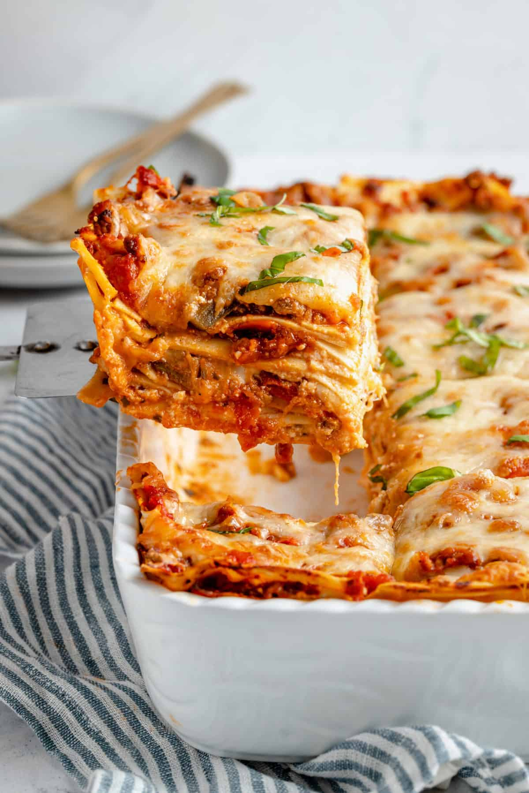

Lasagna Recipe

Ingredients
- 14 ounce tofu
- 5 cups spinach
- 4 garlic cloves
- 1 tablespoon dried oregano
- 1 tablespoon dried basil
- 1/2 teaspoon salt
- 8 cups marinara sauce
- 1 pound lasagna noodles
Steps
- Preheat oven to 350F
- Combine tofu, spinach, garlic, oregano, basil, and salt in a large bowl. Mix Well
- Make lasagna in pan
- Cover with aluminum foil and bake for 1 hour